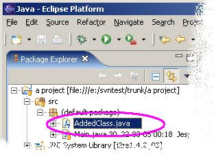

Now your resource is scheduled for addition to the repository, and committing it will make it accessible to the other Team members. This operation does not contact the repository.
Now your resource is scheduled for addition to the repository, and committing it will make it accessible to the other Team members. This operation does not contact the repository.
When you share a project for the first time, or when you add or import new resources to a project, you need to tell Subversion to keep it (or them) under version control. To do this, use the 'Add' command
First, find and select the unversioned resource(s) that you want to add. These will typically be decorated by a little question mark in the Navigator view.

You should only select unversioned resources currently not under Subversion's control, or this command will not be available.
Then, select "Add To Version Control" from the Team menu. The decoration will change to a tidy blue plus.
Now your resource is scheduled for addition to the repository, and committing it will make it accessible to the other Team members. This operation does not contact the repository.
Note: If the resources parent folder is not under version control either, it will be added as well (all the way up to the project root, as needed).
If you add something you didn't want to add anyway, don't panic. You can always undo (revert) your changes, by selecting Revert in the Team menu. This is often prefferred over deleting the resource, since if is only the 'added'-state that you revert, not the creation of the file itself. In other words, the file isn't deleted.
TIP: When you commit your changes back to the repository, you can short-cut the 'Add' command by simply selecting the unversioned resources in the commit dialog. A preference setting controls whether or not unversioned resources must be explicitly checked.
The commit process.